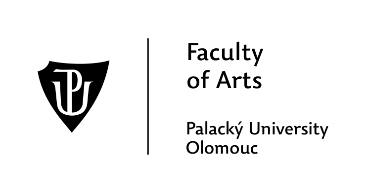
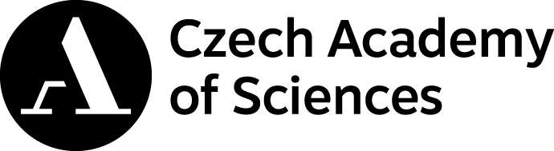
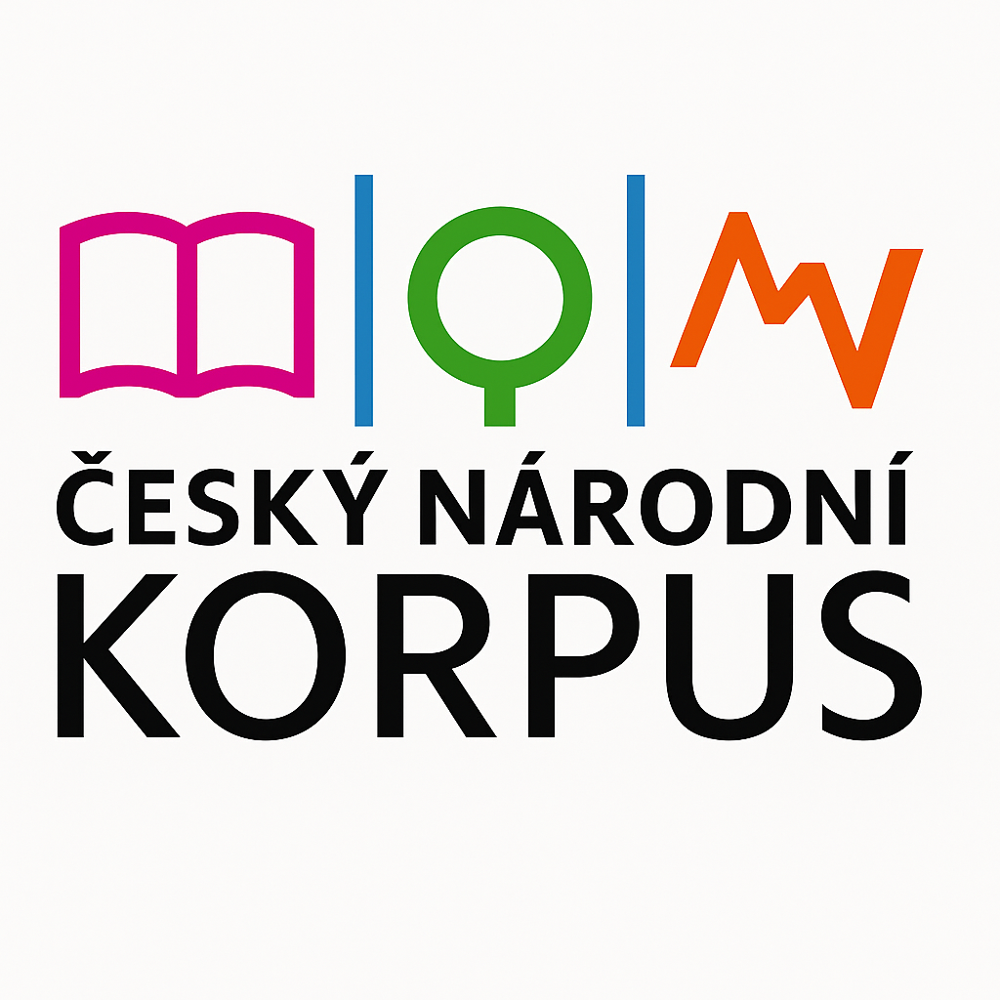
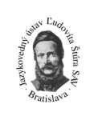

About the Conference
Organization Institutions
Click to view more information...
-

Palacký University Olomouc, Faculty of Arts, Center for Digital Humanities in Literary and Book Studies -

Institute of Czech Literature of the Czech Academy of Sciences -

Czech National Corpus -
Historical Institute of the Czech Academy of Sciences
-

Ludovit Stur Institute of Linguistics -
DARIAH-SK
-

Conference Program
5. 11.
DAY 1: Thursday
Session 1 (09:00–10:15)
| Time: | 09:00–09:15 |
|---|---|
| Speaker: | Adam Pawlowski - Tomasz Walkowiak |
| Affiliation: | Wrocław University of Science and Technology |
| Topic: | National Cultural Profiles from a Lexical Perspective: LLMs vs Text Corpora |
| Details: | Talk · English · In person |
| Time: | 09:15–09:30 |
|---|---|
| Speaker: | Josef Šlerka |
| Affiliation: | Charles University |
| Topic: | The Garden of Forking Paths |
| Details: | Talk · Czech · In person |
| Time: | 09:30–09:45 |
|---|---|
| Speaker: | Jacek Bąkowski |
| Affiliation: | University of Wrocław |
| Topic: | Beyond a Single Measure: Visualizing Collocational Patterns across Measures and Context Windows |
| Details: | Talk · English · In person |
| Time: | 09:45–10:00 |
|---|---|
| Speaker: | Věra Slováková, Alice Velková |
| Affiliation: | Department of Demography and Geodemography, Faculty of Science, Charles University |
| Topic: | From Data to Questions: How Database Structure Shapes the Possibilities of Historical Research |
| Details: | Talk · Czech · In person |
| Time: | 10:00–10:15 |
|---|---|
| Topic: | Discussion of Session 1 |
| Details: | Discussion |
Break and Poster Presentations (10:15–10:30)
| Time: | 10:15–10:30 |
|---|---|
| Speaker: | Jana Synovcová Borovičková – Kateina Bobková-Valentová – Boris Lehečka |
| Affiliation: | Institute of History, Czech Academy of Sciences / Institute of Czech Literature, Czech Academy of Sciences |
| Topic: | Theatrum Neolatinum- poster |
| Details: | Poster · Czech/English · In person |
| Time: | 10:15–10:30 |
|---|---|
| Speaker: | Julia Jennifer Beine |
| Affiliation: | Ruhr University Bochum |
| Topic: | Introducing NeoLatDraCor, a Research-Oriented Corpus for the Study of Neo-Latin Drama |
| Details: | Poster · English · In person |
| Time: | 10:15–10:30 |
|---|---|
| Topic: | Coffee Break |
| Details: | Break |
Session 2 (10:30–11:30)
| Time: | 10:30–10:45 |
|---|---|
| Speaker: | Vojtěch Malínek |
| Affiliation: | Institute of Czech Literature, Czech Academy of Sciences |
| Topic: | Towards FAIR Data and Open Science Ecosystem in the Humanities: The introduction of EOSC CZ platform and Open Science II project activities for the Humanities and Arts |
| Details: | Talk · English · In person |
| Time: | 10:45–11:00 |
|---|---|
| Speaker: | Jiří Milička |
| Affiliation: | Czech National Corpus |
| Topic: | The ideal number of corpus linguistic papers is not infinite |
| Details: | Talk · English · In person |
| Time: | 11:00–11:15 |
|---|---|
| Speaker: | Marek Debnár |
| Affiliation: | Department of Culturology and Tourism, Constantine the Philosopher University in Nitra |
| Topic: | From Literary Studies to Medical Hoaxes: Digital Humanities across Research Domains |
| Details: | Talk · English · In person |
| Time: | 11:15–11:30 |
|---|---|
| Topic: | Discussion of Session 2 |
| Details: | Discussion |
Lunch Break (11:30–13:00)
| Time: | 11:30–13:00 |
|---|---|
| Topic: | Lunch Break |
| Details: | Break |
Session 3 (13:00–14:00)
| Time: | 13:00–13:20 |
|---|---|
| Speaker: | Veronika Sladká |
| Affiliation: | Library of the Czech Academy of Sciences |
| Topic: | From the Printed Page to Relational Data: Modelling the Material and Visual Culture of the Unity of the Brethren in nodegoat |
| Details: | Talk · English · Online |
| Time: | 13:20–13:40 |
|---|---|
| Speaker: | Pim van Bree - Geert Kessels |
| Affiliation: | LAB1100 |
| Topic: | Introduction to nodegoat |
| Details: | Talk · English · Online |
| Time: | 13:40–14:00 |
|---|---|
| Speaker: | Kateřina Levá |
| Affiliation: | INSTITUTE OF ARCHAEOLOGY OF THE CAS, Prague, v. v. i. |
| Topic: | Medieval Urban Networks in Nodegoat: From Theory to Relational Model |
| Details: | Talk · English · In person |
Short Break (14:00–14:05)
| Time: | 14:00–14:05 |
|---|---|
| Topic: | Short Break |
| Details: | Break |
Session 4 (14:05–15:05)
| Time: | 14:05–14:25 |
|---|---|
| Speaker: | Kaspar Gubler |
| Affiliation: | University of Bern |
| Topic: | Talking to a Million Records: REPAC and University Knowledge in nodegoat |
| Details: | Talk · English · Online |
| Time: | 14:25–14:45 |
|---|---|
| Speaker: | Eliška Šolcová |
| Affiliation: | Centre for Classical Studies, Institute of Philosophy, Czech Academy of Sciences |
| Topic: | Olympos: Staging of Ancient Drama |
| Details: | Talk · English · In person |
| Time: | 14:45–15:05 |
|---|---|
| Speaker: | Jana Synovcová Borovičková, Kateřina Bobková-Valentová |
| Affiliation: | Institute of History, Czech Academy of Sciences |
| Topic: | A Dataset of Religious Orders, Houses and Communities: An Example of Data Sharing in nodegoat |
| Details: | Talk · English · In person |
Coffee Break (15:05–15:20)
| Time: | 15:05–15:20 |
|---|---|
| Topic: | Coffee Break |
| Details: | Break |
Session 5 (15:20–16:35)
| Time: | 15:20–15:35 |
|---|---|
| Speaker: | Izabela Varga, Michal Místecký |
| Affiliation: | University of Ostrava |
| Topic: | Language Profile of Post-Stroke Speakers: A Quantitative Linguistics Perspective |
| Details: | Talk · English · In person |
| Time: | 15:35–15:50 |
|---|---|
| Speaker: | Jan Kij |
| Affiliation: | Institute of Czech Studies, Faculty of Arts, Charles University |
| Topic: | Artificial Intelligence as a Tutor of Czech as a Foreign Language |
| Details: | Talk · Czech · In person |
| Time: | 15:50–16:05 |
|---|---|
| Speaker: | Ivan Kraus - Anna Chromá |
| Affiliation: | Faculty of Arts, Charles University / Czech Language Institute, Czech Academy of Sciences |
| Topic: | Developing an Automatic Speech Recognition Model for Czech Child-Adult Conversations |
| Details: | Talk · English · Online |
| Time: | 16:05–16:20 |
|---|---|
| Speaker: | Michaela Kopečková; Magdaléna Lapúniková; Eva Nováková |
| Affiliation: | Faculty of Arts, Palacký University Olomouc; Faculty of Philosophy and Science, Silesian University in Opava; Faculty of Arts and Philosophy, University of Pardubice |
| Topic: | “Tell Me How to Be Polite…” – Testing AI Pragmatic Competence across Languages |
| Details: | Talk · Czech · In person |
| Time: | 16:20–16:35 |
|---|---|
| Topic: | Discussion of Session 5 |
| Details: | Discussion |
Short Break (16:35–16:45)
| Time: | 16:35–16:45 |
|---|---|
| Topic: | Short Break |
| Details: | Break |
Session 6 (16:45–17:45)
| Time: | 16:45–17:05 |
|---|---|
| Speaker: | Milena Králová |
| Affiliation: | Faculty of International Relations, Prague University of Economics and Business |
| Topic: | From Prompt to Meta-Prompt: Exploring the Changing Role of Generative AI in Business German Instruction |
| Details: | Talk · English · Online |
| Time: | 17:05–17:25 |
|---|---|
| Speaker: | Vasiliki Chelidoni |
| Affiliation: | Ionian University, Greece |
| Topic: | Inclusive Language in EU Administrative Translation: Multilingual Institutional Corpora, Semi-Structured Interviews, and the Digital Humanities Perspective |
| Details: | Talk · English · Online |
| Time: | 17:25–17:45 |
|---|---|
| Speaker: | Andrej Gogora |
| Affiliation: | Institute of Ethnology and Social Anthropology, Slovak Academy of Sciences |
| Topic: | Digitally Reviving an Ethnographic Research Collection: From Data Curation to the Etnoskop Online Repository |
| Details: | Talk · Slovak · In person |
6. 11.
DAY 2: Friday
Session 7 (09:00–10:15)
| Time: | 09:00–09:15 |
|---|---|
| Speaker: | PhDr. Vojtěch Kessler, Ph.D., Mgr. Veronika Kršková PhD. |
| Affiliation: | UHK, Czech Academy of Sciences |
| Topic: | Possibilities and Limitations of Digital Tools for Processing Personal Sources, with a Focus on the History of Everyday Life |
| Details: | Talk · Czech · Online |
| Time: | 09:15–09:30 |
|---|---|
| Speaker: | Jan Škvrňák |
| Affiliation: | Institute of Philosophy, Czech Academy of Sciences |
| Topic: | Network Analysis of the Moravian Margravial Wars |
| Details: | Talk · Czech · In person |
| Time: | 09:30–09:45 |
|---|---|
| Speaker: | Monika Stará |
| Affiliation: | CDDK, Faculty of Arts, Jan Evangelista Purkyně University in Ústí nad Labem |
| Topic: | Reading Physical Space: Digital Interpretation and the Complementarity of Sources in Historical Research |
| Details: | Talk · Czech · In person |
| Time: | 09:45–10:00 |
|---|---|
| Speaker: | Mgr. Matej Smida |
| Affiliation: | Matej Bel University in Banská Bystrica |
| Topic: | Content Analysis of Historical Documents Using Large Language Models and the Impact of Prompt Quality on the Results |
| Details: | Talk · Slovak · In person |
| Time: | 10:00–10:15 |
|---|---|
| Topic: | Discussion of Session 7 |
| Details: | Discussion |
Coffee Break (10:15–10:30)
| Time: | 10:15–10:30 |
|---|---|
| Topic: | Coffee Break |
| Details: | Break |
Session 8 (10:30–11:45)
| Time: | 10:30–10:45 |
|---|---|
| Speaker: | Sára Červenková, Petr Plecháč |
| Affiliation: | Institute of Czech Literature, Czech Academy of Sciences |
| Topic: | A Stylometric Analysis of Knight Smil |
| Details: | Talk · English · In person |
| Time: | 10:45–11:00 |
|---|---|
| Speaker: | Olga Kalashnikova |
| Affiliation: | University of Naples-l’Orientale |
| Topic: | From domain-specific HTR to automated manuscript dating: The case of Early East Slavic Church Slavonic |
| Details: | Talk · English · Online |
| Time: | 11:00–11:15 |
|---|---|
| Speaker: | Radek Čech - Kliment Tomáš Mikulka - Miroslav Vepřek |
| Affiliation: | Faculty of Arts, University of Ostrava / Faculty of Arts, Palacký University Olomouc |
| Topic: | Using Stylometric Analysis to Study Old Church Slavonic Texts |
| Details: | Talk · Czech · In person |
| Time: | 11:15–11:30 |
|---|---|
| Speaker: | Zdenko Vozár |
| Affiliation: | Institute of Materials and Machine Mechanics, Slovak Academy of Sciences |
| Topic: | Gathering Alchemical Roses: Genre and Rhetorical Composition of Latin Alchemical Florilegia |
| Details: | Talk · English · In person |
| Time: | 11:30–11:45 |
|---|---|
| Topic: | Discussion of Session 8 |
| Details: | Discussion |
Lunch (11:45–13:00)
| Time: | 11:45–13:00 |
|---|---|
| Topic: | Lunch |
| Details: | Break |
Session 9 (13:00–14:15)
| Time: | 13:00–13:15 |
|---|---|
| Speaker: | Serhii Salo |
| Affiliation: | Masaryk University |
| Topic: | From Close Reading to Corpus Analysis: Formalizing Genre Invariants in the Techno-Thriller |
| Details: | Talk · English · Online |
| Time: | 13:15–13:30 |
|---|---|
| Speaker: | Romana Krolčíková, Miroslav Zumrík |
| Affiliation: | Ľudovít Štúr Institute of Linguistics, Slovak Academy of Sciences |
| Topic: | Frequent Motifs in the Works of M. Kukučín and P. Vilikovský in Light of Data from the Literary Author Corpus |
| Details: | Talk · Slovak · In person |
| Time: | 13:30–13:45 |
|---|---|
| Speaker: | Michal Škrabal |
| Affiliation: | Institute of Czech Literature, Czech Academy of Sciences |
| Topic: | Czech Lexical Portal |
| Details: | Talk · Czech · In person |
| Time: | 13:45–14:00 |
|---|---|
| Speaker: | Ahmed Metwally Abdalla |
| Affiliation: | Charles University |
| Topic: | Between Arabic and Turkish: Literary Translation, Migration, and the Construction of Hybrid Identities in Contemporary Turkey |
| Details: | Talk · English · In person |
| Time: | 14:00–14:15 |
|---|---|
| Topic: | Discussion of Session 9 |
| Details: | Discussion |
Short Break (14:15–14:20)
| Time: | 14:15–14:20 |
|---|---|
| Topic: | Short Break |
| Details: | Break |
Session 10 (14:20–15:35)
| Time: | 14:20–14:35 |
|---|---|
| Speaker: | Petr Lelek |
| Affiliation: | National Archives |
| Topic: | Using the DH Tool VIAN in Audiovisual Research and Its Treatment in Film Studies Articles |
| Details: | Talk · Czech · In person |
| Time: | 14:35–14:50 |
|---|---|
| Speaker: | Ayşe Gül Toprak Ökmen |
| Affiliation: | Istanbul Technical University |
| Topic: | Cinematic Geographies of Istanbul: From Qualitative Content Analysis to GIS-Based Cinematic Cartography |
| Details: | Talk · English · Online |
| Time: | 14:50–15:05 |
|---|---|
| Speaker: | Monika Porwoł |
| Affiliation: | University of Applied Sciences in Racibórz |
| Topic: | Prompting minds and machines: NLP strategies for human-AI translation workflows |
| Details: | Talk · English · Online |
| Time: | 15:05–15:20 |
|---|---|
| Speaker: | Lenka Pořízková and Jiřina Šmejkalová |
| Affiliation: | Department of Czech Studies, Faculty of Arts, Palacký University Olomouc |
| Topic: | The Use of Artificial Intelligence by Czech Publishers |
| Details: | Talk · Czech · In person |
| Time: | 15:20–15:35 |
|---|---|
| Topic: | Discussion of Session 10 |
| Details: | Discussion |
Short Break (15:35–15:40)
| Time: | 15:35–15:40 |
|---|---|
| Topic: | Short Break |
| Details: | Break |
Session 11 (15:40–16:55)
| Time: | 15:40–15:55 |
|---|---|
| Speaker: | František A. Podhajský |
| Affiliation: | Institute of Czech Literature, Czech Academy of Sciences |
| Topic: | Trust, but Verify: The Modernist Novel Through the Lens of Artificial Intelligence |
| Details: | Talk · English · In person |
| Time: | 15:55–16:10 |
|---|---|
| Speaker: | Artjoms Šeļa, Antonina Martynenko |
| Affiliation: | Institute of Czech Literature CAS |
| Topic: | How poetry stopped being a song: historical change in the form and language of English poems and song lyrics |
| Details: | Talk · English · In person |
| Time: | 16:10–16:25 |
|---|---|
| Speaker: | Serpil Karaaslan |
| Affiliation: | Arkin University of Creative Arts and Design |
| Topic: | Re-reading Poe's The Man of the Crowd as an Allegory for the Digital Age: Social Media, Spectatorship, and the Limits of Reading Others |
| Details: | Talk · English · Online |
| Time: | 16:25–16:40 |
|---|---|
| Speaker: | Richard Změlík - Jindřiška Svobodová |
| Affiliation: | Faculty of Arts, Palacký University Olomouc |
| Topic: | Methods of Disinformation Analysis |
| Details: | Talk · Czech · In person |
| Time: | 16:40–16:55 |
|---|---|
| Topic: | Final Discussion and Closing of the Conference |
| Details: | Closing |